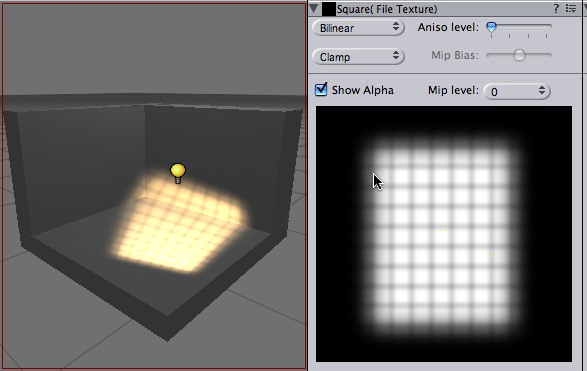
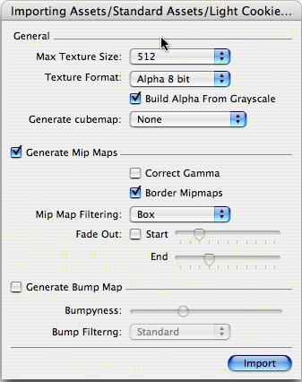

Previous
Previous
Unity ships with a few Light Cookies. They can be found in Standard Assets/Light Cookies. Sometimes you want to create your own though.
A light cookie modulates the color of the light with the alpha channel, thus allows you to
An interesting way to add a lot of visual detail to your scenes is to use cookies - greyscale textures you use to control the precise look of in-game lighting. This is fantastic for making moving clouds and giving an impression of dense foilage. The Light page has more info on all this, but the main thing is that for textures to be usable for cookies, the following properties need to be set:

To create a light cookie for a spot light:
- Paint a cookie texture in photoshop. The image should be grayscale. White pixels means full lighting intensity, black pixels mean no lighting. The borders of the texture need to be completely black, otherwise the light will appear to leak outside of the spotlight.
- In the texture inspector change the "Repeat" Wrap mode to "Clamp"
- Select the Texture and bring up the Import Settings using the Assets -> Import Settings... menu.
Use the following settings:
- Enable Border Mipmaps
- Enable Build Alpha From Grayscale (This way you can make a grayscale cookie and unity converts it to a alpha map automatically)
- Set the Texture Format to Alpha 8 Bit

To create a light cookie for a directional light: